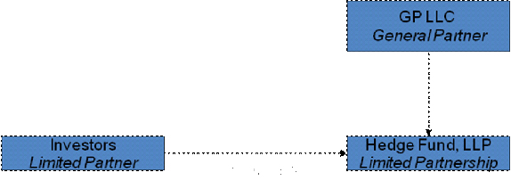
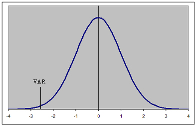

There are a wide variety of investments vehicles in which a large pool of investors combine their assets and entrust them to a professional portfolio manager. One of the main advantages of these types of investments is that they give small investors access to professionally managed, diversified portfolios of equities, bonds and other securities that would be quite difficult (if not impossible) to create with a small amount of capital. Fractional ownership in the portfolio is made through the purchase of shares. Each shareholder participates proportionally in the portfolio's gain or loss. Some of the more popular investments in this category include:
Mutual Funds
A mutual fund is an investment vehicle that is made up of a pool of funds collected from many investors, for the purpose of investing in securities such as stocks, bonds, money market instruments and similar assets. Open-end mutual funds and closed-end mutual funds represent two of the three types of investment companies.
Unit Investment Trusts
Unit Investment Trusts (UITs) represent the third type of investment company. UITs buy and hold a fixed, unmanaged portfolio, generally of stocks and bonds, as redeemable "units" to investors for a specific period of time. It is designed to provide capital appreciation and/or dividend income.
Exchange-Traded Funds
An ETF is a fund that tracks an index, a commodity or a basket of assets like an index fund, but trades like a stock on an exchange. ETFs experience price changes throughout the day as they are bought and sold.
Hedge Funds
Hedge funds are aggressively managed portfolios that use advanced investment strategies in an effort to generate high returns (either in an absolute sense or over a specified market benchmark). Hedge funds can be thought of as mutual funds for the super rich.
Real Estate Investment Trusts
A Real Estate Investment Trust (REIT) is a dividend-paying stock that focuses on real estate.
It is useful to understand some of the common terms associated with investment companies, funds and REITs. Understanding these terms provides insight into how the investments work and how to evaluate them.
Net Asset Value (NAV)
Investment vehicles such as mutual funds, REITS and exchange-traded funds, hold multiple underlying investments, including stocks, bonds, real estate and other assets. When the total value of these assets is added up, liabilities are subtracted and the remaining number is divided by the number of outstanding shares; the resulting value is referred to as the net asset value (NAV). The NAV represents the per-share price investors would spend to purchase a single share of the investment.
NAV per share is computed once a day for open-end mutual funds, based on the closing market prices of the securities in the fund's portfolio. Buy and sell orders are processed at the NAV of the trade date; however, investors must wait until the following day to get the trade price. Because ETFs and closed-end funds trade like stocks, their shares trade at market value, which can be a dollar value above (trading at a premium) or below (trading at a discount) NAV.
Because many pooled investment vehicles pay out virtually all of their income and capital gains, changes in NAV are not the best gauge of mutual fund performance, which is best measured by annual total return.
SEE: Capital Gains Tax 101
The efficient market hypothesis (EMH), created in the 1970s by Eugene Fama, is an investment theory that states it is impossible to "beat the market," because stock market efficiency causes existing share prices to always incorporate and reflect all relevant information. According to the EMH, stocks always trade at their fair value on stock exchanges, making it impossible for investors to either purchase undervalued stocks or sell stocks for inflated prices. As such, it should be impossible to outperform the overall market through expert stock selection or market timing. It states that the only way an investor can possibly obtain higher returns is by purchasing riskier investments.
Although it is a cornerstone of modern financial theory, the EMH is highly controversial and often disputed. Believers argue it is pointless to search for undervalued stocks or to try to predict trends in the market through either fundamental or technical analysis.
While academics point to a large body of evidence in support of EMH, an equal amount of dissension also exists. For example, investors such as Warren Buffett have consistently beaten the market over long periods of time, which should be impossible, according to the EMH. Detractors of the EMH also point to events, such as the 1987 stock market crash when the Dow Jones Industrial Average (DJIA) fell by over 20% in a single day, as evidence that stock prices can seriously deviate from their fair values.
Relevant Articles:
Modern Portfolio Theory (MPT), a hypothesis put forth by Harry Markowitz in his paper "Portfolio Selection," (published in 1952 by the Journal of Finance) is an investment theory based on the idea that risk-averse investors can construct portfolios to optimize or maximize expected return based on a given level of market risk, emphasizing that risk is an inherent part of higher reward. It is one of the most important and influential economic theories dealing with finance and investment.
Also called "portfolio theory" or "portfolio management theory," MPT suggests that it is possible to construct an "efficient frontier" of optimal portfolios, offering the maximum possible expected return for a given level of risk. It suggests that it is not enough to look at the expected risk and return of one particular stock. By investing in more than one stock, an investor can reap the benefits of diversification, particularly a reduction in the riskiness of the portfolio. MPT quantifies the benefits of diversification, also known as not putting all of your eggs in one basket.
Related Readings:
Consider that, for most investors, the risk they take when they buy a stock is that the return will be lower than expected. In other words, it is the deviation from the average return. Each stock has its own standard deviation from the mean, which MPT calls "risk."
The risk in a portfolio of diverse individual stocks will be less than the risk inherent in holding any one of the individual stocks (provided the risks of the various stocks are not directly related). Consider a portfolio that holds two risky stocks: one that pays off when it rains and another that pays off when it doesn't rain. A portfolio that contains both assets will always pay off, regardless of whether it rains or shines. Adding one risky asset to another can reduce the overall risk of an all-weather portfolio.In other words, Markowitz showed that investment is not just about picking stocks, but about choosing the right combination of stocks among which to distribute one's nest egg.
On the more technical side, there are five statistical risk measurements used in modern portfolio theory (MPT); alpha, beta, standard deviation, R-squared and the Sharpe ratio. All of these indicators are intended to help investors determine a potential investment's risk-reward profile.
SEE: 5 Ways To Measure Mutual Fund Risk
Total Portfolio Return
Total return represents the actual rate of return of an investment or a pool of investments over a given evaluation period. It includes interest, capital gains, dividends and distributions realized over a given period of time.
Total return accounts for two categories of return: income and capital appreciation. Income includes interest paid by fixed-income investments, distributions or dividends. Capital appreciation represents the change in the market price of an asset.
Related Readings:
Mutual Fund Theorem
Mutual Fund Theorem (MFT) is an investing theory, postulated by Nobel laureate James Tobin, that states that all investors should hold an identically comprised portfolio of "risky assets" combined with some percentage of risk-free assets or cash. A conservative investor would hold a higher percentage of cash, but would have the same basket of risky investments in his or her portfolio as an aggressive investor.
MFT came about as a result of the framework laid out by Harry Markowitz and his theories on how diversification limits portfolio risk. The viability of the mutual fund theorem has been questioned, because several important assumptions must be in place for the theorem to be proved. These include a lack of transaction costs and perfectly transparent markets.
Related Readings:
Alpha
Alpha is one of the easiest terms to explain. Simply stated, alpha is often described to the value that a portfolio manager adds to or subtracts from an investment's return. Alpha is measured in direct relationship to the investment's benchmark.
A positive alpha of 1.0 means the fund has outperformed its benchmark index by 1%. Correspondingly, a similar negative alpha would indicate an underperformance of 1%. For both portfolio managers and investors, more alpha is always better.
Related Readings:
Beta is a measure of the volatility, or systematic risk, of a security or a portfolio, in comparison to the market as a whole. Think of beta as the tendency of a security's returns to respond to swings in the market. A beta of 1 indicates that the security's price will move with the market. A beta of less than 1 means that the security will be less volatile than the market. A beta of greater than 1 indicates that the security's price will be more volatile than the market. For example, if a stock's beta is 1.2, it's theoretically 20% more volatile than the market.
Many utilities stocks have a beta of less than 1. Conversely, most high-tech Nasdaq-based stocks have a beta of greater than 1, offering the possibility of a higher rate of return, but also posing more risk.
Essentially, beta expresses the fundamental tradeoff between minimizing risk and maximizing return. Let's give an illustration: Say a company has a beta of 2; this means it is two times as volatile as the overall market. If we expect the market to provide a return of 10% on an investment, then we would expect the company to return 20%. On the other hand, if the market were to decline and provide a return of -6%, investors in that company could expect a return of -12% (a loss of 12%). If a stock had a beta of 0.5, we would expect it to be half as volatile as the market; a market return of 10% would mean a 5% gain for the company.
Related Readings:
Here is a basic guide to various betas:
Negative beta - A beta less than 0 - which would indicate an inverse relation to the market - is possible but highly unlikely. Some investors used to believe that gold and gold stocks should have negative betas, because they tended to do better when the stock market declined, but this hasn't proved to be true over the long term.
Beta of 0 - Basically, cash has a beta of 0. In other words, regardless of which way the market moves, the value of cash remains unchanged (given no inflation).
Beta between 0 and 1 - Companies with volatilities lower than the market have a beta of less than 1 (but more than 0). As we mentioned earlier, many utilities fall in this range.
Beta of 1 - A beta of 1 represents the volatility of the given index used to represent the overall market, against which other stocks and their betas are measured. The S&P 500 is such an index. If a stock has a beta of one, it will move the same amount and direction as the index. So, an index fund that mirrors the S&P 500 will have a beta close to 1.
Beta greater than 1 - This denotes a volatility that is greater than the broad-based index. Again, as we mentioned above, many technology companies on the Nasdaq have a beta higher than 1.Beta greater than 100 - This is impossible, as it essentially denotes a volatility that is 100 times greater than the market. If a stock had a beta of 100, it would be expected to go to 0 on any decline in the stock market. If you ever see a beta of over 100 on a research site it is usually the result of a statistical error, or the given stock has experienced large swings due to low liquidity, such as an over-the-counter stock. For the most part, stocks of well-known companies rarely ever have a beta higher than 4.
Are you prepared to take a loss on your investments? Many people are not and, therefore, opt for investments with low volatility. Other people are willing to take on additional risk because with it they receive the possibility of increased reward. It is very important that investors not only have a good understanding of their risk tolerance, but also know which investments match their risk preferences.
By using beta to measure volatility, you can better choose those securities that meet your criteria for risk. Investors who are very risk averse should put their money into investments with low betas, such as utility stocks and Treasury Bills. Those investors who are willing to take on more risk may want to invest in stocks with higher betas.
Many brokerage firms calculate the betas of securities they trade and then publish their calculations in a beta book. These books offer estimates of the beta for almost any publicly-traded company. The problem is that most of us don't have access to these brokerage books and the calculation for beta can often be confusing, even for experienced investors.
However, there are other resources. One of the better websites that publishes beta is Yahoo! Finance (enter your company name, then click on "Key Statistics" and look under "Stock Price History"). The beta that is calculated on Yahoo! compares the activity of the stock over the last five years with the S&P 500. A beta of "0.00" simply means that the stock either is a new issue or doesn't yet have a beta calculated for it.
The most important caveat for using beta to make investment decisions is that beta is a historical measure of a stock's volatility. Past beta figures, or historical volatility, do not necessarily predict future beta or future volatility. In other words, if a stock's beta is 2 right now, there is no guarantee that in a year the beta will be the same. One study by Gene Fama and Ken French called "The Cross-Section of Expected Stock Returns" (published in 1992 in the Journal of Finance) on the reliability of past beta concluded that for individual stocks, past beta is not a good predictor of future beta. An interesting finding in this study is that betas seem to revert back to the mean. This means that higher betas tend to fall back toward 1 and lower betas tend to rise toward 1.
The second caveat for using beta is that it is a measure of systematic risk, which is the risk that the market as a whole faces. The market index to which a stock is being compared is affected by market-wide risks. So, as beta is found by comparing the volatility of a stock to the index, beta only takes into account the effects of market-wide risks on the stock. The other risks the company faces are firm-specific risks that are not grasped fully in the beta measure. So, while beta will give investors a good idea about how changes in the market affect the stock, it does not look at all the risks the company, alone, faces.
It is also important for investors to make the distinction between short-term risk - where beta and price volatility are useful - and longer-term, fundamental risk, where big-picture risk factors are more telling. High betas may mean price volatility over the near term, but they don't always rule out long-term opportunities.
Standard deviation is a statistical measurement that sheds light on historical volatility. For example, a volatile stock will have a high standard deviation, while the deviation of a stable blue chip stock will be lower. A large dispersion tells us how much the return on the fund is deviating from the expected normal returns.
Standard deviation is so widely used because it is expressed in the same units as the original data, so it is easy to interpret and can be used on distribution graphs (e.g., the normal distribution).
As it relates to investing, an index fund can be expected to have a low standard deviation versus its benchmark index, as the fund's goal is to replicate the index. Aggressive growth funds, on the other hand, can be expected to have standard deviation as the portfolio manager makes aggressive bets in an effort to generate higher-than-average returns.
While, intuitively, a lower standard deviation may seem preferable, that is not necessarily the case. When considering the amount of deviation in a portfolio, investors should consider both their personal tolerance for portfolio volatility and the investment objective of the strategy under consideration. More aggressive investors may be comfortable with an investment strategy that offers higher-than-average volatility, while more conservative investors may not.
Related Readings:
In an investment portfolio, turnover refers to the number of shares traded in a given period. Expressed as a percentage, it tells us what portion of the securities (stocks, bonds or both) in a fund's portfolio are bought and sold during the course of a year.
The four major reasons investors should be concerned about turnover include:
A low portfolio turnover rate is a very positive fund investment quality. However, it must be remembered that the nature or investing style of a fund can impose certain "structural" features on portfolio management that influence its trading activities:
Whatever the category of mutual fund being considered, the lower the portfolio turnover percentage the better. While this measurement may vary from year to year, a fund's trading activity is within the control of the manager and should consistently fall, historically, within a reasonable range.
While this list of terms is by no means comprehensive, it does lay a foundation on which you can build your investment knowledge. To learn more, keep reading.
Related Reading:
You've probably heard it said more than once that you should always consult a mutual fund's prospectus before handing over your money. The same advice applies to unit investment trusts (UITs), exchange-traded funds (ETFs) and REITS.
While mutual funds and UITs are legally required to provide a prospectus to prospective investors, it's no secret that the size of this document and the type of information inside can be hard to tackle, but don't be too overwhelmed. Here is a guide to what a prospectus is, why it is important and what items should be central to your considerations.
What Is a Prospectus?
A prospectus is a formal legal document, which is required by and filed with the Securities and Exchange Commission. It provides details about an investment offering for sale to the public, including fees, investment objectives and strategies, as well as the finer points of the past performance, risks, performance, distribution policy, fees and expenses, and fund management.
You can obtain these documents directly from fund companies through mail, email or phone. You can also get them from a financial planner or advisor. Many fund companies also provide PDF versions of their prospectuses on their websites.
Related Reading:
Investment Objectives
These are the fund's financial goals, which are reflected in the types of securities chosen to achieve those goals. Types of investment objectives include long-term capital growth, stable income, high total return, etc. Fund companies cannot change these objectives unless investors of the fund consent to the changes through a vote.
It is important to determine whether the fund's goals match your own investment goals. For example, a fund with an above-average capital growth objective would probably not be a good fit for an 89-year-old widow who needs regular income from investments to cover day-to-day expenses.
Related Reading:
Investment Strategies
This part of the prospectus explains the way in which a fund allocates and manages its resources to achieve its investment objectives. Aspects considered when designing such a strategy include setting goals for net asset value, determining asset allocation, investment restrictions (such as only investing in a certain industry) and deciding whether (and how) derivatives may be used.
A fund's investment strategy, like its goals, should be in sync with your investment style. For example, although a small cap fund and a large cap equity fund are both aiming for long-term capital appreciation, they are both using very different strategies to reach this goal. Before choosing one type of fund over another, make sure you consider why investing in any one of these asset types is right for you. Otherwise, you might be in for some surprises!
Risks
Because investors have varying degrees of risk tolerance, the risk section of a prospectus is very important. It details the risks associated with a particular fund, such as credit risk, interest rate risk, market risk, etc.
To get the most out of this section, you should be familiar with what distinguishes the different kinds of risk, why they are associated with particular funds, and how they fit into the balance of risk in your overall portfolio. For example, if a fund invests a large portion of its assets into foreign securities, you need to understand that this may pose significant foreign-exchange and country risk; but you also need to determine whether this kind of risk works with other types of risk in your portfolio in satisfying your tolerance.
Past Performance
This section shows you the fund's track record, but do remember the common disclaimer that "past performance is not an indication of future performance." Read the historical performance of the fund critically and make sure to take into account both long- and short-term performance. Also, make sure the benchmark chosen by the fund is appropriate. For example, using the performance of federal treasury bills as a benchmark for an equity fund is useless; the S&P 500 is generally the accepted benchmark for equities. In addition, keep in mind that many of the returns presented in historical data don't account for tax, or some funds calculate an after-tax return with a rate that may be higher or lower than your own. Be sure to look at any fine print in these sections, as they should say whether or not taxes have been taken into account.
Distribution Policy
The distributions a fund pays its investors come from realized capital gains, dividends, interest or other income stemming from the securities and investing activities of the fund. The distribution policy tells you how these payments are made. Some funds distribute returns directly to unitholders, while others reinvest the distributions back into the fund, buying more units for fundholders.
Whether these distributions are paid in cash or reinvested, unitholders have to pay taxes on them. If you are concerned about taxes, there are tax-managed funds that limit income and capital gain distributions. These tax-managed funds allow you to ensure that you maximize the use of your tax-sheltered options, such as your 401(k) or IRA.
Fees and Expenses
This section is extremely important to consider, because fees and expenses will eat into your total investment return from the fund. Here you will find information on any back or front-end loads, 12B-1 fees and the management expense ratio. Because these compromise your return regardless of the fund's performance, it is rarely optimal to invest in funds with loads.
Fund Management
Here you can discover how long your fund manager has been managing your fund. Watch out for the fund that has been in operation significantly longer than the fund manager has been managing it. The performance of such a fund can be credited not to the present manager, but to the previous ones. If the current manager has been managing the fund for only a short period of time, look into his or her past performance with other funds with similar investment goals and strategies. You can then get a better gauge of his or her talent and investment style.
After reading the sections of the prospectus outlined above, you will have a good idea of how the fund functions and what risks it may pose. Most importantly, you'll be able to determine whether it is right for you. If you need more information beyond what the prospectus provides, you can consult the fund's annual report, which is available directly from the fund company or through a financial professional.
From a structural perspective, mutual funds can typically be broken down into two types.
Open-Ended Funds
These funds dominate the mutual fund marketplace, in terms of volume and assets under management. With open-ended funds, purchases and sales of fund shares take place directly between investors and the fund company. There's no limit to the number of shares the fund can issue; as more investors buy into the fund, more shares are issued. Federal regulations require a daily valuation process, called marking to market, which subsequently adjusts the fund's per-share price to reflect changes in portfolio (asset) value. The value of the individual's shares is not affected by the number of shares outstanding.
Related Readings
Closed-End Funds (CEF)
These funds issue only a specific number of shares through an initial public offering and do not issue new shares as investor demand grows. Prices are not determined by the net asset value (NAV) of the fund, but are driven by investor demand. Purchases of shares are often made at a premium or discount to NAV.
Related Readings:
There are a wide variety of mutual funds, including those that specialize in specific type of investments. Some of the more popular fund types include:
Money Market Funds
A money market fund seeks to earn interest for shareholders while maintaining a net asset value of $1 per share. Mutual funds, brokerage firms and banks offer these funds. Portfolios are comprised of short-term (less than one year) securities representing high-quality, liquid debt and monetary instruments. A money market fund's purpose is to provide investors with a safe place to invest easily accessible cash-equivalent assets characterized as a low-risk, low-return investment.
SEE: Why Money Market Funds Break The Buck and The Pros And Cons Of Money Market Funds
Bond Funds
Bond funds invest primarily in bonds and other debt instruments. The exact type of debt the fund invests in will depend on its focus, but investments may include government, corporate, municipal and convertible bonds, along with other debt securities like mortgage-backed securities. A bond fund's purpose is to provide investors with a source of income that is generally less volatile than income derived from investments in the stock market.
SEE: Evaluating Bond Funds: Keeping It Simple and Bond Funds Boost Income, Reduce Risk
Balanced Funds
Balanced funds combine a stock component, a bond component and, sometimes, a money market component in a single portfolio. These funds generally stick to a relatively fixed mix of stocks and bonds that reflects either a moderate (higher equity component) or conservative (higher fixed-income component) orientation. A balanced fund's purpose is to provide a mixture of safety, income and modest capital appreciation.
SEE: In Praise Of Portfolio Simplicity
Equity Funds Equity funds invest primarily in stocks. They are principally categorized according to the size of the companies in which they invest (large cap, small cap, mid cap), the investment style of the holdings in the portfolio (growth, value, core) and geography (domestic, international).Global/International Funds
International funds come in two varieties. The first is global funds, which invest in both foreign and domestic markets. The second is international funds, which invest only in foreign markets. These can be broad market, regional or single-country funds. For investors who live in developed nations, global and international funds generally offer both the opportunity for higher returns and the possibility of greater volatility.
Specialty Funds
Specialty stock funds invest in target business sectors such as healthcare, commodities and real estate. Because their focus is more concentrated than other equity funds, they tend to offer both the opportunity for higher returns and the possibility of greater volatility.
Among other distinguishing features, mutual funds are acquired with a sales charge (load) or without a sales charge (no load). If there is a load, the charge can be as high as 8%, although it seems that a 3 to 5.75% range is most common. This charge is paid by the investor (the buyer of the fund) to the seller (a financial intermediary such as a brokerage firm, insurance company, financial planner or investment advisor) for services rendered. The charge is deducted from the amount being invested.
No-load mutual funds are offered directly to the investing public by fund companies, or they are sold to investors by financial intermediaries who have a compensation arrangement (hourly, flat fee or a percentage of assets) with the purchaser. In this case, a sales charge is not involved and the investor fully invests his or her available money into funds sponsored by a no-load fund company.
Related Reading:
There are five general aspects of the load/no-load debate worth considering:
1. Fund investors need to understand that a load is a selling commission paid to a financial intermediary and not the fund company. It does not buy increased investment expertise by fund management. On the other hand, financial intermediaries defend their fees as fair compensation for the investment advisory services they provide to the investor.
2. The load-fund business has complicated things for investors by confusing them with a variety of fund share classes: A, B and C. In brief, these simply represent three different ways of applying a sales charge. With A shares you pay up front and with B shares you pay at the back end. With C shares, called "level-load," the year-to-year costs are usually high, but spread out over time.3. A fund's load is not included in the computation of a mutual fund's expense ratio (see below) and, therefore, is an additional cost to be considered when investing in load funds.
4. The long historical record on mutual funds shows that there is little difference in the total return performance of load and no-load funds.
5. Employee participants in a defined-contribution, company sponsored retirement plan, such as a 401(k), generally need not be concerned about loads. In most instances, these retirement plans waive any sales charges on their fund investment options.
A mutual fund's expense ratio is the result of a calculation, as opposed to a type of expense. The ratio's numerator is the sum of a variety of administrative and operating expenses, while its denominator is an average of the fund's assets. It is expressed as a percentage - lower is better - and is a key indicator of a fund's investment quality.
In general operating terms, stock funds are more expensive than bond funds, international funds are more expensive than domestic funds and small- and mid-cap funds are more expensive than large-cap funds.
The largest component of a fund's operating expenses is the fee paid to its investment advisors or managers. A fund must also pay for record keeping, custodial services, taxes, legal costs, and accounting and auditing fees.
In addition to these conventional operating expenses, some funds also have a marketing, or distribution, fee commonly referred to as a 12b-1 fee. If this fee is charged, it is included in a fund's operating expenses, unlike a fund's sales charge, which is not considered an operating expense. In the mutual fund industry's early days, a provision in the regulations permitted funds to incur promotional expenses to help develop mutual fund activity. The maximum 12b-1 fee allowable is an annual 1% of a fund's assets. To be considered a no-load fund, the 12b-1 annual charge must be no more than 0.25%.
Many mutual fund observers find it hard to justify this type of fee. With the increasing popularity of mutual funds, how much more "promotion" is really necessary? Today, the 12b-1 fee is used almost exclusively to reward intermediaries for selling a fund's shares. There is a movement underway to eliminate the fee, but the fund industry as a whole is resisting the change.
Lastly, it seems that some mutual fund investors are not all that clear on how operating expenses are paid. The simple answer is that whatever is included in a fund's operating expense is charged against the assets under management. In other words, the fund's investors pay the tab. This is how costs reduce investment returns.
Related Reading:
Commission
Investment experts have speculated that brokerage commissions can add as much as 0.15% to a fund's annual expenses. However, these costs are not included in a fund's expense ratio. They seem to fit the definition of an operating expense but, as of today, are not so considered.
SEE: Paying Your Investment Advisor - Fees Or Commissions?
Redemption Fee
Designed to discourage market timers, an increasing number of mutual funds are charging a flat fee, usually 1%, on withdrawals (shares redeemed) made within a certain time frame. Generally, redemption fees are in effect for one year or less following the date of the investor's initial purchase. If you are an investor (in for the long term), as opposed to a speculator (in and out for the short term), this type of fee will have no effect on your fund investment.
Also remember that a mutual fund is a business and seeks to return a legitimate profit to its owners. The fund business is a very profitable one. As such, investors should seek out those funds that run a lean operation and align their interests with those of investors for a win-win relationship.
The return on any investment, measured over a given period of time, is simply the sum of its capital appreciation and any income generated, divided by the original amount of the investment, which is expressed as a percentage. The term applied to this composite calculation is total return.
However, there is a difference in this simple concept as applied to stocks and mutual funds. Unfortunately, a great many mutual fund investors do not seem to have a clear understanding of a fund's total return. The relationships between a fund's net asset value (NAV), yield (income) and capital gains distributions can be confusing. For stock investors, calculating and understanding their total return is relatively easy. By comparing how total return is derived for both stocks and mutual funds, you'll be able to better understand how this measure works for mutual funds.
Related Reading:
Stock Total Return
We begin our illustration with a share of XYZ Company that is bought for $30 at the beginning of the year. During the year, its price fluctuates, but it closes the year at $33, which represents a nice percentage return on the investment of 10% ($3/$30).
But the deal gets even better, because XYZ paid an annual dividend of $1 per share. This dividend equals an additional 3.3% return ($1/$30). Adding together the capital appreciation (price increase) of 10% and the income return (dividend) of 3.3% gives us a one-year total return for XYZ Company stock of 13.3%. However, remember that unless you sell XYZ stock, the price appreciation gain remains in the stock price, or is unrealized.
Related Reading:
Fund Total Return
With mutual funds, explaining total return is a bit more complicated. We begin with a share of the ABC Fund, which is purchased at its net asset value (price) of $16 per share. A fund's NAV is derived by dividing the value of its portfolio securities (the fund's assets), less any accrued fees and expenses (the fund's liabilities), by the number of fund shares outstanding. Here's an illustration of the computation of net asset value for the ABC Fund:
The fund's cash and cash equivalents = $200,000
The fund's stock holdings at market prices:
10,000 shares of Company X @ $50 = $500,000
20,000 shares of Company Y @ $30 = $600,000
50,000 shares of Company Z @ $8 = $400,000
Total market value of stock holdings = $1,500,000
The fund's total assets = $1,700,000
Less the fund's liabilities = $100,000
The fund's total net assets = $1,600,000
The fund's total shares outstanding: 100,000
The fund's NAV: $16 ($1,600,000/100,000)
Remember that mutual funds are priced once a day, at the end of the day. Unlike stocks, where prices are moved by the supply and demand forces of the marketplace, fund prices are determined by the value of the underlying securities in the fund.
In our example, ABC is a hybrid stock/bond fund with a growth-income orientation. Apart from capital gains, its individual portfolio holdings will generate dividends and interest. By law, mutual funds must distribute these to the fund's shareholders. ABC's income distribution (its dividends to shareholders) for the year amounted to $1 per share. In addition, the fund's trading activities (the buying and selling of securities) generated a realized capital gain of $3 per share that ABC also distributed to its shareholders.
The ABC Fund passed along all the earnings and capital appreciation it generated - $4 ($1 in dividend distributions and $3 in a capital gains distribution) to its shareholders for a total return of 25% ($4/$16). Here again, unlike a stock, by paying out all its capital gains, the ABC Fund's price, or NAV, remains at or close to $16. In this scenario, if a fund investor only focused on the movement in ABC's NAV, the results would not look very good. It's even possible for a fund's NAV to decline, but still have good income/capital gain distributions, which will be reflected in a positive total return.
Obviously, a fund's NAV does not tell the whole mutual fund performance story, but its total return does. It captures a fund's changes in NAV, its income distribution and capital gains distribution, which, as a whole, are the true test of fund's return on investment.
Mutual funds sold in the United States are required to pay out all capital gains at least once per year. For investors in taxable accounts, this is worth noting, as the payouts can trigger tax liability.
Open-ended funds, on the other hand, pay out dividends and capital gains each year to all shareholders, regardless of the date on which the shareholder bought into the fund. This can result, for example, in an investor buying into a fund in November, but owing capital gains tax on gains that were realized in March. Even though the investor didn't own the fund in March, tax liability is shared among all investors on a yearly basis.
For investors in 401(k) and other tax-deferred retirement savings vehicles, taxes are paid only when the investments are redeemed, making the yearly payout of capital gains an issue of little concern.
Related Reading:
Index
From an investment strategy standpoint, traditional exchange-traded funds (ETFs) are designed to track indexes. ETFs are available in hundreds of varieties, tracking nearly every index you can imagine; they offer all of the benefits associated with index mutual funds, including low turnover, low cost and broad diversification, plus their expense ratios are significantly lower.
Commodity
Commodities are a separate asset class from stocks and bonds, so investing in commodity ETFs can provide extra diversification in a portfolio. Because they are hard assets, these ETFs can also provide protection against unexpected inflation.
Commodity ETFs can be divided in three types:
Commodity ETFs either hold the actual commodity or purchase futures contracts. ETFs that use futures contracts have uninvested cash that is used to purchase interest-bearing government bonds. The interest on the bonds is used to cover the expenses of the ETF and to pay dividends to the holders.
Related Readings:
Currency
Currency ETFs are designed to track the movement of a currency in the exchange market. The underlying investments in a currency ETF will be either foreign cash deposits or futures contracts. ETFs based on futures will invest the excess cash in high-quality bonds, typically U.S. Treasury bonds. The management fee is deducted from the interest earned on the bonds.
Several choices of currency ETFs are available in the marketplace. An investor can purchase ETFs that track individual currencies such as the Swiss franc, the euro, the Japanese yen or a basket of currencies; however, currency ETFs should not be considered a long-term investment. Investors who are looking to diversify their U.S. dollar assets are generally better off investing in foreign stock or bond ETFs; however, currency ETFs can help investors to hedge their exposure to foreign currencies.Related Readings:
Leveraged
An exchange-traded fund (ETF) that uses financial derivatives and debt to amplify the returns of an underlying index. Leveraged ETFs are available for most indexes, such as the Nasdaq-100 and the Dow Jones Industrial Average. These funds aim to keep a constant amount of leverage during the investment time frame, such as a 2:1 or 3:1 ratio.
A leveraged ETF does not amplify the annual returns of an index, it follows the daily changes, instead. For example, let's examine a leveraged fund with a 2:1 ratio. This means that each dollar of investor capital used is matched with an additional dollar of invested debt. If one day the underlying index returns 1%, the fund will theoretically return 2%. The 2% return is theoretical, as management fees and transaction costs diminish the full effects of leverage.
The 2:1 ratio works in the opposite direction as well. If the index drops 1%, your loss would then be 2%.
Related Readings:
Inverse
With the advent of inverse ETFs, investors can easily bet against the market. Inverse ETFs are designed to move in the opposite direction of their benchmarks. For example, if the S&P 500 rises by 1%, the inverse S&P 500 ETF should drop by 1% and vice versa. There are also leveraged inverse ETFs, which are designed to provide double the opposite performance of the underlying index, so, if the S&P 500 drops by 1%, a leveraged inverse S&P 500 ETF should increase by 2%.
An inverse ETF can either use short positions of the underlying stocks or futures. ETFs that use futures contracts can have the excess cash invested in bonds, which covers the expenses of the ETF and can pay dividends to the owners.
There are a number of reasons to use inverse ETFs. For example, while speculators can easily make a bearish bet on the market, for investors who have positions that they do not want to sell because of unrealized capital gains or illiquidity, this is not so easy. In this case, they can buy an inverse ETF as a hedge.
In fact, many investors prefer to use inverse ETFs instead of selling short the index. Inverse ETFs can be purchased in tax-deferred accounts, but shorting stocks is not allowed because in theory, it exposes the investor to unlimited losses. However, the most an investor in an inverse ETF can lose is the entire value of the inverse ETF.
Expenses
Due to the generally passive nature of indexed strategies, the internal expenses of most ETFs are considerably lower than those of many mutual funds. Of the more than 900 available ETFs listed on Morningstar in 2010, those with the lowest expense ratios charged about 0.10%, while those with the highest expenses ran about 1.25%. By comparison, the lowest fund fees range from .01% to more than 10% per year for other funds.
Another expense that should be considered are the product acquisition costs, if any. Mutual funds can often be purchased at NAV, or stripped of any loads, but many (they are often sold by an intermediary) have commissions and loads associated with them, some of which run as high as 8.5%. ETF purchases are free of broker loads.
In both cases, additional transaction fees are usually assessed, but pricing will largely depend on the size of your account, the size of the purchase and the pricing schedule associated with each brokerage firm. Clients of advisors who hold institutional accounts tend to benefit from lower trading costs, often as low as $9.95 per ETF purchase or $20 for mutual funds. Additional cost considerations should be given if you plan to use dollar-cost averaging to buy into the funds or ETFs, because frequent trading of ETFs could significantly increase commissions, offsetting the benefits resulting from lower fees.
Related Reading:
Liquidity is usually measured by the daily trade volume, which is generally expressed as the number of shares traded per day. Thinly traded securities are illiquid and have higher spreads and volatility. When there is little interest and low trading volume, the spread increases, causing the buyer to pay a price premium and forcing the seller into a price discount in order to get the security sold. ETFs, for the most part, are immune to this. ETF liquidity is not related to its daily trading volume, but rather to the liquidity of the stocks included in the index.
Broad-based index ETFs with significant assets and trading volume have liquidity. For narrow ETF categories, or even country-specific products that have relatively small amounts of assets and are thinly traded, ETF liquidity could dry up in severe market conditions, so you may wish to steer clear of ETFs that track thinly traded markets or have very few underlying securities or small market caps in the respective index.
Related Reading:
ETFs offer tax advantages to investors. As passively managed portfolios, ETFs (and index funds) tend to realize fewer capital gains than actively managed mutual funds. ETFs are more tax efficient than mutual funds because of the way they are created and redeemed. For example, suppose that an investor redeems $50,000 from a traditional Standard & Poor's 500 Index (S&P 500) fund. To pay that to the investor, the fund must sell $50,000 worth of stock. If appreciated stocks are sold to free up the cash for the investor, then the fund captures that capital gain, which is distributed to shareholders before year-end. As a result, shareholders pay the taxes for the turnover within the fund. If an ETF shareholder wishes to redeem $50,000, the ETF doesn't sell any stock in the portfolio. Instead it offers shareholders "in-kind redemptions," which limit the possibility of paying capital gains.
Related Reading:
ETFs and mutual funds share similar methods of performance measurement. Like mutual funds, ETF prices are determined by the value of the underlying securities in the fund. This value rises and falls with the value of the underlying investments. NAV only tells part of the performance story, as dividends and capital gains must also be taken into consideration when calculating the total return on the investment.
Tracking Errors
Although rarely considered by the average investor, tracking errors can have an unexpected material effect on an investor's returns. It is important to investigate this aspect of any ETF index fund before investing.
Running an ETF index fund might seem like a simple job, but it can actually be quite difficult. ETF index fund managers often employ complex strategies in order to track their target index in real time, with fewer costs and greater accuracy than their competitors.
Many market indexes are market capitalization weighted. This means that the amount of each security held in the index fluctuates, according to the ratio of its market capitalization against the total market capitalization of all securities in the index. Since market capitalization is market price times shares outstanding, fluctuations in the price of securities can cause the composition of these indexes to change constantly.
An index fund must execute trades in such a way as to hold hundreds or thousands of securities precisely in proportion to their weighting in the constantly changing target index. In theory, whenever an investor buys or sells the ETF index fund, trades for all of these different securities must be executed simultaneously at the current price. This is not the reality. Although these trades are automated, the fund's buy and sell transactions may be large enough to slightly change the prices of the securities it is trading. In addition, trades are often executed with slightly different timing, depending on the speed of the exchange and the trading volume in each security.
The key is for investors to understand what they are buying. Make sure that the ETF index fund you are considering does a good job of tracking its index. Key metrics to look for here are the fund's R-squared and beta. R-squared is a statistical measure that indicates how well the index fund's price movements correlate with index. The closer the R-squared is to one, the closer the index fund's ups and downs match those of the target index.
You will also want to ensure that the fund's beta is very close to the target index's beta. This means that the fund has about the same risk profile as the index. Theoretically, a fund can have a close correlation with its index, but still fluctuate by a greater or lesser margin than the index, which will be indicated by a different beta. These two metrics together indicate that the fund will track the index very closely. Finally, a visual inspection of the fund's returns versus its benchmark index is a good sanity check on the statistics. Be sure to look at different periods to make sure the index fund tracks the index well over both short-term fluctuations and long-term trends.
Related Reading:
With progress comes innovation. Exchange-traded funds (ETFs), barely 20 years old, are among the more recent innovation to come off the managed money assembly line. By contrast, the mutual fund dates back to the 1920s, surviving the Great Depression and numerous recessions, including the most recent and, arguably, most severe, of the past several years.
Which Is Better?
It depends upon the type of investor. The traditional, less sophisticated IRA investor who reallocates strategically, rather than tactically, keeps expenses low and is not a stock picker, may find the process of purchasing shares from a mutual fund company and redeeming them a simpler process. Additionally, plan sponsors' use of mutual funds is well entrenched. Indeed, the ICI reports in its 2011 Investment Company Fact Book that close to $5 trillion is invested in open-end mutual funds within IRAs and defined contribution plans.
Individual ETF investors, on the other hand, tend to be more sophisticated, owning individual securities in both their tax qualified and non-qualified accounts, alike. Institutional investors use them, as well. ETFs trade throughout the day, may be purchased on margin and sold short. ETFs also afford the investor exposure to myriad markets and asset classes. Most are passive investments (track an index), but some offer active and complex approaches.
Institutional managers (separate accounts, hedge funds) who use leverage, take directional bets, hedge (pairs trading and market neutral strategies) or tactically allocate asset classes, use ETFs that prove to be less expensive and more nimble. These vehicles are more transparent than their closed-end fund (CEF) forebears, which lack the authorized participant, a built in market making device. This feature of the ETF allows for daily creation and redemption of shares, which minimizes differences between the ETF price and its net asset value (NAV). CEFs issue a fixed number of shares, in contrast, which lead to continued differences between the share price and the NAV, creating an arbitrage opportunity.
ETFs continue their innovation, offering active management and funds of funds (an ETF pursuing a strategy by investing in other ETFs). Some go further out along the risk continuum with the advent of synthetic ETFs, for which return comes from a swap rather than an index, ETNs (exchange traded notes), which hold fixed income, and ETVs (exchange traded vehicle), which are similar to ETNs but issued through a special purpose vehicle to gain access to more opaque markets; here counterparty risk exists. Finally, there are leveraged ETFs and inverse ETFs that track the opposite performance of an index, effectively making a directional bet. The aforementioned suite of products is best reserved for the more sophisticated risk-aware investor.
Related Reading:
Depending upon the investor, exchange-traded funds may have possible drawbacks. No-load mutual fund investors would need to open a brokerage account and pay commissions to trade. Frequent, small investments that are part of a dollar-cost averaging strategy could prove to be more expensive. Additionally, investors need to understand that passive ETFs are subject to tracking errors, some to a greater degree than others, where the manager may not be able to purchase some illiquid securities in the index and must attempt index replication through sampling the liquid securities in it. Product complexity is always a consideration.
Investors must also understand differences in settlement procedures. Whereas mutual funds settle next-day, ETFs settle in three business days. The investor must have cash on hand to pay for purchases. Retail investors would be more likely to find these differences a challenge than institutional ones. Below is a table that better illustrates the differences between the two financial instruments.
| ETF | Mutual Fund |
| Daily and continuous pricing | Forward pricing |
| Exchange traded | Fund redemption at day\'s end |
| No tax effect of trading on shareholders | Large redemptions may cause capital gains distributions for non-redeeming fund shareholders |
| In-kind redemption reduces shareholder tax liability | Fund managers limited in their ability to manage taxes due to cash redemptions |
| Limit, stop limit orders, short selling allowed | No limit order pricing or short selling permitted |
| May be purchased and sold on margin | No margin trades allowed |
| Lower expense ratios as client services born by brokerage firms | Expenses tend to be higher due to sales loads |
| May be purchased in any brokerage account | Fund availability depends on existence of selling agreements with the broker/dealer |
| Brokerage commissions applicable | transaction costs, load funds through a broker often have sales charge or commission |
A unit investment trust (UIT) is a U.S. investment company that buys and holds a fixed, unmanaged portfolio, generally of stocks and bonds, as redeemable "units" to investors for a specific period of time. UITs are issued via an initial public offering (IPO). They are designed to provide capital appreciation and/or dividend income.
Like mutual funds, UITs are collective investments in which a large pool of investors combine their assets and entrust them to a professional portfolio manager. While the portfolio is constructed by professional investment managers, it is not actively traded. So after it is created, it remains intact until it is dissolved and assets are returned to investors. Securities are sold or purchased only in response to a change in the underlying investments, such as a corporate merger or bankruptcy.
There are two types of UITs: stock trusts and bond trusts. Stock trusts conduct initial public offerings by making shares available during a specific amount of time known as the offering period. Investors' money is collected during this period and then shares are issued. Stock trusts generally seek to provide capital appreciation, dividend income or both. Unlike mutual funds, which are required to adhere to certain rules of diversification and must hold a minimum number of different securities, UITs may have more concentrated portfolios. They can own shares of stock in just a few companies. This is why there are no mutual funds that use a pure "Dogs of the Dow" approach. The "Dogs" strategy entails buying the 10 highest yielding stocks in the Dow Jones Industrial Average, holding them for a year and then repeating the process. Since a mutual fund can't own just 10 different companies, a number of UITs have been created to implement the Dogs of the Dow strategy.
Bond UITs have historically been more popular than stock UITs. Investors seeking steady, predictable sources of income often purchase bond UITs in an effort to obtain income through monthly, quarterly or semi-annual payments. These investments usually consist of government bonds and corporate bonds that are purchased and held to maturity. As each bond matures, assets are paid out to investors. Bond UITs come in a wide range of offerings, including those that specialize in domestic corporate bonds, international corporate bonds, domestic government bonds (national and state), foreign government bonds or a combination of issues.
The steady and predictable income stream makes bond UITs very popular with retirees looking for supplements to their income. One risk that comes with a UIT is that, because the interest on the UIT is fixed for the life of the security, it is more susceptible to inflation. For the most part, UITs are fairly low-risk investments, but stock UITs depend heavily on the performance of the stock market and in a stock trust there is no certainty of return, like there is in a bond trust.
It is useful to understand some of the common terms associated with UITs. Understanding these terms provides insight into how the investments work and how to evaluate them.
Related Readings:
Early Redemption/Exchange
While UITs are designed to be bought and held until they reach termination, investors can sell their holdings back to the issuing investment company at any time. These early redemptions will be paid based on the current underlying value of the holdings. Investors in bond UITs should make particular note of this, because it means that the amount paid to the investor may be less than the amount that would be received if the UIT was held until maturity, as bond prices change with market conditions.
Some UITs permit investors to exchange their holdings for a different UIT at a reduced sales charge. This flexibility can come in handy if your investment objectives change and the UIT in your portfolio no longer meets your needs.
Termination Date
Unlike either mutual funds or closed-end funds, a UIT has a stated date for termination. This date is often based on the investments held in its portfolio. For example, a portfolio that holds bonds may have a bond ladder consisting of five-, 10- and 20-year bonds. The portfolio would be set to terminate when the 20-year bonds reach maturity. At termination, investors receive their proportionate share of the UIT's net assets.
How to Invest
Most UITs usually cannot be purchased through traditional brokers. Instead, they can be bought through some insurance companies or financial advisors/planners. Each unit typically costs $1,000, is sold by brokers to investors and can be resold in the secondary market. You will usually pay a sales fee when purchasing the UIT, therefore, UITs don't make good short-term investments. Investors generally pay a load when purchasing UITs and accounts are subject to annual fees.
Because the interest payments on a UIT are fixed, holding a UIT for a long time could undermine performance. Depending on the type, a UIT can sometimes be difficult to sell quickly.
Taxes
UITs may make periodic dividend payments (often monthly or quarterly). Shareholders with taxable accounts are responsible for paying taxes on the dividend. Because UITs buy securities and hold them, capital gains generation is usually of little concern prior to liquidation.
Unlike open-ended mutual funds, in which investors share responsibility for tax liabilities generated by the portfolio, UITs offer a different scenario. If purchased at the IPO, each investor receives a costs basis that reflects the net asset value (NAV) on the date of purchase and tax considerations are based on the NAV.
How to Measure Performance
UIT and mutual fund share similar methods of performance measurement. Like mutual funds, UIT prices are determined by the value of the underlying securities in the fund. This value rises and falls with the value of the underlying investments. NAV only tells part of the performance story, as dividends and capital gains must also be taken into consideration when calculating the total return on the investment.
Hedge funds are aggressively managed portfolios that use advanced investment strategies in effort to generate high returns (either in an absolute sense or over a specified market benchmark). They can be thought of as mutual funds for the super rich. They are similar to mutual funds in that investments are pooled and professionally managed, but differ in that the fund has far more flexibility in its investment strategies.
It is important to note that hedging is actually the practice of attempting to reduce risk, but the goal of most hedge funds is to maximize return on investment. The name is mostly historical, as the first hedge funds tried to hedge against the downside risk of a bear market, by shorting the market (mutual funds generally can't enter into short positions as one of their primary goals). Nowadays, hedge funds use dozens of different strategies, so it isn't accurate to say that hedge funds just "hedge risk." In fact, because hedge fund managers make speculative investments, these funds can carry more risk than the overall market.
Structurally, a hedge fund has some similarities to a mutual fund. For example, just like a mutual fund, a hedge fund is a pooled investment vehicle that makes investments in equities, bonds, options and a variety of other securities. It can also be run by a separate manager, much like a sub-advisor runs a mutual fund that is distributed by a large mutual fund company. That, however, is basically where the similarities end. The range of investment strategies available to hedge funds and the types of positions they can take are quite broad and in many cases, very complex. We will focus on specific strategies later in this section, so for now we'll focus on how hedge funds are structured.
Related Reading:
The typical hedge fund structure is really a two-tiered organization.
|  |
| Figure 1: Hedge Fund Organizational Structure |
The general/limited partnership model is the most common structure for the pool of investment funds that make up a hedge fund. In this structure, the general partner assumes responsibility for the operations of the fund, while limited partners can make investments into the partnership and are liable only for their paid-in amounts. As a rule, a general/limited partnership must have at least one GP and one LP, but can have multiple GPs and many LPs. There is an SEC rule, however, that generally limits investors to 99 in order to be excluded from SEC registration.
The second component of the two-tiered structure is the structure of the general partnership. The typical structure used for the general partner is a limited liability company. An LLC is very similar to a subchapter S corporation in that it is a flow-through tax entity and investors are limited in liability to the amount of their investment. The general partner's responsibility is to market and manage the fund and perform any functions necessary in the normal course of business, including hiring a fund manager (oftentimes a related company) and managing the administration of the fund's operations.
Hedge funds also differ quite radically from mutual funds in how they charge fees. Their fee structure is one of the main reasons why talented money managers decide to open their own hedge funds to begin with. Not only are the fees paid by investors higher than they are for mutual funds, they include some additional fees that mutual funds don't even charge.
Management Fee
The management fee for a hedge fund is for the same service that the management fee covers in mutual funds. The difference is that hedge funds typically charge a management fee of 2% of assets managed and in some cases even higher, if the manager is in high demand and has had a very good track record. This fee alone makes managing a hedge fund attractive, but it is the next fee that really makes it a profitable endeavor for good fund managers.
Related Reading:
Incentive Fee
Most if not all hedge funds charge an incentive fee of anywhere between 10 to 20% of fund profits and some hedge funds have even gone as high as 50%. The idea of the incentive fee is to reward the hedge fund manager for good performance; if the fund's performance is attractive enough, investors are willing to pay this fee. For example, if a hedge fund manager generates a 20% return per year, after management fee, the hedge fund manager will collect 4% of those profits, leaving the investor with a 16% net return. In many cases, this is an attractive return despite the high incentive fee, but with more mediocre managers entering the industry in search of fortune, investors have more often than not been disappointed with net returns on many funds.
There is one caveat to the incentive fee, however. A manager only collects an incentive fee for profits exceeding the fund's previous high, called a high-water mark. This means that if a fund loses 5% from its previous high, the manager will not collect an incentive fee until he or she has first made up the 5% loss. In addition, some managers must clear a hurdle rate, such as the return on U.S. Treasuries, before they collect any incentive fees.
Hedge funds often follow the so-called "two and twenty" structure, where managers receive 2% of net asset value managed and 20% of profits, although these fees can also vary among hedge funds.
Hedge funds generally follow one of two types of structures: the first is a traditional hedge fund and the second is a fund of funds. A fund of funds is a hedge fund that holds a diversified portfolio of investments in other hedge funds.
Funds of funds are well-diversified investment vehicles made up of a variety of other funds. They typically have lower minimums and are a good way to invest in hedge funds with broad diversification. Some funds of funds invest in hedge funds with a variety of different strategies and a much higher level of diversification, while others, called single-strategy funds, will invest in a variety of funds having the same or similar strategies.
Fund of funds enable an investor to obtain instant diversification in a portfolio of hedge funds, which is particularly attractive for an investor with a portfolio that is large enough to invest in hedge funds, but too small to achieve proper diversification going directly into hedge funds. For example, with hedge fund minimums often starting at $1 million, it would be difficult for an investor with a $2 million account to diversify their portfolio of hedge funds. The maximum number of hedge funds they could invest in is two and that would not be a very prudent diversification strategy. A fund of funds, however, that is invested in 15 to 20 hedge funds and has a minimum investment of $500,000 enables the investor to gain exposure to the alternative asset class, without compromising the overall struct. There are advantages and disadvantages to funds of funds and the benefits to an investor are completely dependent on the investor.
These multi-strategy funds provide broader diversification and uncorrelated returns within underlying funds. The investor in this case relies on the skill of the fund manager to allocate the portfolio to appropriate strategies and to monitor and tactically adjust the portfolio as needed. An investment in a quality multi-strategy fund of funds is also appropriate for investors who do not have the skill or resources to determine which strategies are attractive in the current environment.
Most hedge funds are entrepreneurial organizations that employ proprietary or well-guarded strategies. While the hedge fund universe is wide and often funds can fit into multiple categories, funds are generally classified as either equity-focused or fixed-income. Past this very basic definition, funds can be broken down into any number of sub-categories, depending on their investment strategies. Some common fund types include:
A close look at some hedge fund strategies provides additional insight into these complex investments.
Arbitrage is the exploitation of an observable price inefficiency and, as such, pure arbitrage is considered riskless. Consider a very simple example: Acme stock currently trades at $10 and a single stock futures contract due in six months is priced at $14. The futures contract is a promise to buy or sell the stock at a predetermined price. So, by purchasing the stock and simultaneously selling the futures contract, you can, without taking on any risk, lock in a $4 gain before transaction and borrowing costs.
In practice, arbitrage is more complicated, but three trends in investing practices have opened up the possibility of all sorts of arbitrage strategies: the use of derivative instruments, trading software and various trading exchanges. For example, electronic communication networks and foreign exchanges make it possible to take advantage of "exchange arbitrage," the arbitraging of prices among different exchanges.
Only a few hedge funds are pure arbitrageurs, but when they are, historical studies often prove they are a good source of low-risk, reliably-moderate returns. But, because observable price inefficiencies tend to be quite small, pure arbitrage requires large, usually leveraged investments and high turnover. Further, arbitrage is perishable and self-defeating; if a strategy is too successful, it gets duplicated and gradually disappears.
Most so-called arbitrage strategies are better labeled "relative value." These strategies do try to capitalize on price differences, but they are not risk free. For example, convertible arbitrage entails buying a corporate convertible bond, which can be converted into common shares while simultaneously selling short the common stock of the same company that issued the bond. This strategy tries to exploit the relative prices of the convertible bond and the stock; the arbitrageur of this strategy would think the bond is a little cheap and the stock is a little expensive. The idea is to make money from the bond's yield if the stock goes up, but to also make money from the short sale if the stock goes down. However, as the convertible bond and the stock can move independently, the arbitrageur can lose on both the bond and the stock, which means the position carries risk.Related Readings:
Event-driven strategies take advantage of transaction announcements and other one-time events. One example is merger arbitrage, which is used in the event of an acquisition announcement and involves buying the stock of the target company and hedging the purchase by selling short the stock of the acquiring company. Usually at announcement, the purchase price that the acquiring company will pay to buy its target, exceeds the current trading price of the target company. The merger arbitrageur bets the acquisition will happen and cause the target company's price to converge (rise) to the purchase price that the acquiring company pays. This also is not pure arbitrage. If the market happens to frown on the deal, the acquisition may unravel and send the stock of the acquirer up (in relief) and the target company's stock down (wiping out the temporary bump), which would cause a loss for the position.
There are various types of event-driven strategies. One other example is "distressed securities," which involves investing in companies that are reorganizing or have been unfairly beaten down. Another interesting type of event-driven fund is the activist fund, which is predatory in nature. This type takes sizable positions in small, flawed companies and then uses its ownership to force management changes or a restructuring of the balance sheet.
Related Readings:
The largest group of hedge funds uses directional or tactical strategies. One example is the macro fund, made famous by George Soros and his Quantum Fund, which dominated the hedge fund universe and newspaper headlines in the 1990s. Macro funds are global, making "top-down" bets on currencies, interest rates, commodities or foreign economies. Because they are for "big picture" investors, macro funds often do not analyze individual companies.
Here are some other examples of directional or tactical strategies:
If you read the description of most hedge fund investment objectives, there is usually some mention of absolute returns. It is this goal that makes hedge funds so attractive, particularly when markets are down. Unlike mutual funds, which constantly measure themselves against their appropriate benchmarks and comment on their performance versus their benchmarks, hedge funds promise - and are intended - to provide absolute returns regardless of market conditions. That being said, there are always market movements that affect hedge fund performance, either directly or indirectly (via the impact on their underlying investments).
Hedge funds lie at the active end of the investing spectrum as they seek positive absolute returns, regardless of the performance of an index or sector benchmark. Unlike mutual funds, which are "long only" (make only buy-sell decisions), a hedge fund engages in more aggressive strategies and positions, such as short selling, trading in derivative instruments like options and using leverage (borrowing) to enhance the risk/reward profile of their bets.
This activeness of hedge funds explains their popularity in bear markets. In a bull market, hedge funds may not perform as well as mutual funds, but in a bear market - taken as a group or asset class - they should do better than mutual funds because they hold short positions and hedges. The absolute return goals of hedge funds vary, but a goal might be stated as something like "6 to 9% annualized return, regardless of the market conditions."
Investors, however, need to understand that the hedge fund promise of pursuing absolute returns means hedge funds are "liberated" with respect to registration, investment positions, liquidity and fee structure. First, hedge funds in general are not registered with the SEC. They have been able to avoid registration by limiting the number of investors and requiring that their investors be accredited, which means they meet an income or net worth standard. Furthermore, hedge funds are prohibited from soliciting or advertising to a general audience, a prohibition that lends to their mystique.
It is useful to understand some of the common terms associated with hedge fund performance. Understanding these terms provides insight into how the investments work and how to evaluate them.
Absolute Returns
A hedge fund must be evaluated based on absolute returns, but those returns also need to be consistent with the fund's strategy. There are funds that employ strategies that generate very consistent returns over time with limited volatility. An example of this type of fund is an asset-backed lending fund that makes loans and collects payments that are predictable and consistent over time. These funds can generate anywhere from 8 to 12% per year and are often used as a substitute for fixed income, when fixed income is not attractive.
There are other fund strategies that should have similar returns and there are also strategies that should generate higher returns, albeit with much higher volatility. In either case, a hedge fund that describes its strategy as pursuing absolute returns should always have positive returns over 12-month periods, for example. Most hedge funds fall short of these expectations, but in a perfect world, absolute returns should be positive and consistent.
The Sharpe Ratio
One metric that is widely used in the hedge fund world is the Sharpe ratio. The Sharpe ratio measures the amount of return adjusted for each level of risk taken. It is calculated by subtracting the risk-free rate from annualized returns and dividing the result by the standard deviation of the returns. This metric can be applied across hedge funds with different levels of returns and volatility to determine whether the hedge fund is generating any alpha (excess return) by taking on additional risk. A good Sharpe ratio will vary by strategy and anything above 1 tends to be an attractive return. As with other measures, however, the following analysis should be conducted using Sharpe ratio, as well as pure returns metrics.
Related Readings:
A very common analysis, and one that is prevalent in the mutual fund world, is to analyze relative returns versus a benchmark. For example, a large-cap manager would be compared to the S&P 500 Index and his or her performance would be evaluated based on the fund's returns and standard deviation relative to the index. For hedge funds, the relative performance analysis is more challenging, but not impossible.
Although most hedge fund marketing materials compare themselves to the S&P 500 to display their outperformance and uncorrelated returns, as investors, we have to understand if the manager is doing well relative to other hedge funds using the same or similar strategies. The first step in this process is to gain enough of an understanding of the hedge fund manager's style, in order to determine which hedge fund index, if any, their performance can be compared to.
As mentioned in the section on strategies, many strategies can be categorized into certain buckets, but each fund has a unique strategy. In many cases, some hedge funds may have multiple strategies, making the index decision more difficult. Let's evaluate a simple example:
Suppose we are evaluating a long/short equity fund that focuses on event-driven opportunities, such as mergers, management buyouts, share buybacks or any other events. There is both a long/short equity index and an event-driven index, and the obvious solution is to run a comparison to both. We could evaluate whether the hedge fund's performance is more like one index than the other. If the fund compares well versus both indexes, however, then additional due diligence is warranted. If the fund compares poorly, then the due diligence process may end there.
Once a hedge fund passes the index test, we could then get more specific in our comparisons by evaluating the hedge fund performance versus peers that use similar strategies. The first level of peer analysis would be a comparison of returns versus other hedge fund managers that state they apply the same strategy. Most databases group hedge funds into categories that are closely related to the hedge fund indexes mentioned above. However, unlike the hedge fund index, which may only have a limited number of funds, choosing all the funds in a category gives the analysis a much broader perspective and allows the analyst to place the fund in quartiles relative to peers.
Related Readings:
Standard Deviation
The most common risk measure used in both hedge fund and mutual fund evaluations is standard deviation. Standard deviation in this case is the level of volatility of returns measured in percentage terms, and usually provided on an annual basis. Standard deviation gives a good indication of the variability of annual returns and makes it easy to compare to other funds when combined with annual return data. For example, if comparing two funds with identical annualized returns, the fund with a lower standard deviation would normally be more attractive, if all else is equal.
Unfortunately, and particularly when related to hedge funds, standard deviation does not capture the total risk picture of returns. This is because most hedge funds do not have normally distributed returns and standard deviation assumes a bell-shaped distribution, which assumes the same probability of returns being above the mean as below the mean.
|  |
| Figure 2: Standard Deviation Chart |
Most hedge fund returns are skewed in one direction or another and the distribution is not as symmetrical. For this reason, there are a number of additional metrics to use when evaluating hedge funds and, even with the additional metrics, some risks simply cannot be measured.
Another measure that provides an additional dimension of risk is called value-at-risk (VaR). VaR measures the dollar-loss expectation that can occur with a 5% probability. In Figure 2, this is the area to the left of the vertical black line on the left of the graph. This provides additional insight into the historical returns of a hedge fund, because it captures the tail end of the returns to the down side. It adds another dimension because it makes it possible to compare two funds with different average returns and standard deviation. For example, if Fund A has an average return of 12% and a standard deviation of 6%, and Fund B has an average return of 24% with a standard deviation of 12%, VaR would indicate the dollar amount of loss that is possible with each fund with a 5% probability.
Put another way, VaR would tell you with 95% confidence that your losses would not exceed a certain point. (You can never be 100% confident that you won't lose an entire investment.) It tries to answer the question "Given an investment of a particular return and volatility, what's the worst that could happen?"
Downside Capture
In relation to hedge funds, and in particular those that claim absolute return objectives, the measure of downside capture can indicate how correlated a fund is to a market, when the market declines. The lower the downside capture, the better the fund preserves wealth during market downturns. This metric is figured by calculating the cumulative return of the fund for each month that the market/benchmark was down and dividing it by the cumulative return of the market/benchmark in the same time frame. Perfect correlation with the market will equate to a 100% downside capture and typically is only possible when comparing the benchmark to itself.
Drawdown
Another measure of a fund's risk is maximum drawdown. Maximum drawdown measures the percentage drop in cumulative return from a previously reached high. This metric is good for identifying funds that preserve wealth by minimizing drawdowns throughout up/down cycles, and gives an analyst a good indication of the possible losses that this fund can experience at any given point in time. Months to recover, on the other hand, gives a good indication of how quickly a fund can recuperate losses. Take the case where a hedge fund has a maximum drawdown of 4%, for example. If it took three months to reach that maximum drawdown, as investors, we would want to know if the returns could be recovered in three months or less. In some cases where the drawdown was sharp, it should take longer to recover. The key is to understand the speed and depth of a drawdown with the time it takes to recover these losses. Do they make sense given the strategy?
Leverage
Leverage is a measure that often gets overlooked, yet is one of the main reasons why hedge funds incur huge losses. As leverage increases, any negative effect in returns gets magnified and causes the fund to sell assets at steep discounts to cover margin calls. Leverage has been the primary reason why hedge funds like LTCM and Amaranth have gone out of business. Each of these funds may have had huge losses due to the investments made, but chances are these funds could have survived had it not been for the impact of leverage and the effect it had on the liquidation process.
Despite the additional quantitative metrics available for the analysis of risk, many of which were not even covered in this tutorial, qualitative risks are as important, if not more important, particularly when evaluating hedge funds. Since they are unregulated pools of funds and their strategies are more complex, it is imperative that a thorough analysis be completed on items other than numbers.
One of the most important evaluations is that of management. A fund must have good, strong management just like a company. A talented hedge fund manager with strong stock-picking abilities may perform well, but his contribution to success will be blunted if the fund is not managed properly.
The same could be said of back-office operations, including trading, compliance, administration, marketing, systems, etc. In many cases, a hedge fund will outsource many of the non-investment functions to third-party firms; we will cover some of these service providers later in the tutorial. Whether a fund has some of these functions in-house or if they are outsourced, they need to be at a level that allows for the effective functioning of the investment management process. For example, it is critical to have adequate systems to measure risks within a portfolio at any given time, so that the hedge fund manager can feel confident that his strategy is intact, throughout. It is also important for trading systems to be able to implement the hedge fund manager's ideas, so as to maximize the expected returns of the investments and to minimize trading costs that would otherwise harm returns.
Scale is another measure that is critical to a hedge fund's success and, although one might use quantifiable metrics to evaluate scale, it takes a subjective opinion to determine whether a fund's strategy will be impacted by having too large of a fund and by how much returns will be affected. Hedge fund managers often answer this question by providing both a soft-close limit and a hard-close limit to new funding, in addition to their opinion on how much they can actually manage and still be effective.
A soft close indicates that no additional investors will be allowed into the fund, while a hard close indicates that the fund will no longer accept any additional investments. A fund's capacity, for that matter, should then be higher than the level indicated for a hard close. Otherwise, it would imply that the fund will accept investments up until the point where they can no longer achieve the same returns with their stated strategy. An analyst should be cautious of a hedge fund manager that doesn't close at the time indicated, even if the manager states that he or she is finding opportunities in other areas that will allow for continued growth. In the latter case, you should be cautious of
style drift and investigate whether the manager has any skills related to these "new opportunities."
When analyzing hedge funds, the important thing to remember is to look beyond the numbers and statistics. An investor can be lured into an inappropriate investment if the qualitative factors mentioned above are not analyzed within the context of the overall strategy. While there are some risks that should be unconditional, such as management integrity, there are others that can vary by hedge fund strategy.
Hedge funds are often mistaken to be very similar in risk to other types of investments and although they are often measured through the same types of quantitative metrics, hedge funds have qualitative risks that make them unique to evaluate and analyze. In the following section of this tutorial, we'll evaluate some of the most common risk metrics used in hedge fund analysis as well as some of the broad qualitative issues that should be evaluated.
While every type of fund may have a different set of risks for its investors to consider, there are three basic types of risks which are shared by the entire hedge fund industry.
Investment Risk
The biggest and most obvious risk is the risk of investors losing some or all of their investment. A key quality of hedge fund investment risk is the virtual Wild West landscape of the hedge fund industry (though strides have been made since the 2008 financial crisis). Fund managers, for the most part, have free-reign over the investment decisions they make in chasing alpha with their portfolios. Unlike many other types of institutions, hedge funds are not regulated. While a fund may be tagged as a global blue-chip equity fund, and in most respects would be considered a relatively "safe" hedge fund investment, the strategies implemented by fund management, such as the use of excessive leverage, can create levels of investment risk not expected by investors. Some specific types of investment risk include:
Style Drift
Style drift occurs when a manager strays from the fund's stated goal or strategy to enter a hot sector or avoid a market downturn. Although this may sound like good money management, the reason an investment was made in the first place in the fund was due to the manager's stated expertise in a particular sector/strategy/etc., so abandoning his or her strength is probably not in the investors' best interests.
Overall Market Risk
Both equity and fixed income funds, and overall directional move by the equity markets, can play a big role on the returns of a fund. For equity funds, although many may claim to be market neutral or have a zero beta, it is very difficult, in practice, to achieve such a balance, as the equity markets can move very quickly in either direction - especially down. In time of crises, correlations go to one, so even the most diversified portfolio will not be safe from a market crash.
Widening credit spreads are the biggest threat to the performance of fixed income funds. Since most fixed income funds take long positions in corporate bonds and short positions in comparable treasuries, adverse economics movements can cause the simultaneous increase in corporate yields while the Treasury yields to fall, thus widening the spreads between positions and hurting the funds' performance.
Leverage
The use of leverage within the hedge fund industry is commonplace, since a smart leveraged position can magnify gains. But as we all know, leverage is a double-edged sword and even a small move in the wrong direction can put a major dent in a fund's returns, especially those funds which speculate heavily in commodities and currencies.
Fraud Risk
The risk of fraud is more prevalent in the hedge fund industry as compared to mutual funds, for instance, due to the lack of regulation for hedge funds. Hedge funds do not face the same stringent reporting standards as other funds, therefore, the risk of unethical behavior on the part of the fund and its employees is heightened. There have been numerous media reports of hedge fund managers who have bilked investors out of huge sums of money in order to live lavish lifestyles or cover up constant losses for the fund. Knowing your hedge fund manager and staying abreast of the literature provided to you by the fund are keys to protecting yourself from investment fraud.
Operational Risk
Lastly, operational risk refers to the shortcomings within the policies, procedures and activities of a hedge fund and its employees. For example, quite often hedge funds deal in the over-the-counter market, where positions can be tailor made to suit the needs of the involved parties. The biggest issue with OTC securities is in valuing them on an ongoing basis, since they are not publicly traded and very illiquid. This issue came to light in the early stages of the 2008 credit crisis, when seemingly no two institutions were able to accurately value the mortgage and asset-backed securities that had flooded the marketplace in the early 2000s. The very nature of the hedge fund industry creates operational inefficiencies and, thus, operational risks.
Evaluating hedge fund performance differs significantly from the analysis used in other investments because of their risk/return characteristics and unique strategies. Robust analytical software will provide not only the metrics mentioned above, but also a variety of other metrics that can add insight into the performance of a particular fund. The list of metrics can be endless and every analyst tends to gravitate toward a group of select favorites that provide enough information to determine whether due diligence should continue.
The single-strategy fund of funds, on the other hand, would require an investor decision to add exposure to a particular type of strategy. I would hope that this type of investor has the resources to evaluate such a decision and make an allocation to this fund after careful evaluation of the overall portfolio.
It is important to assure that the fund of funds has well diversified funds even though they may use the same strategy. For example, if evaluating a long/short fund made up of 15 to 20 funds, it would be prudent to understand the sub-categories of each of the funds, such as whether they are sector-specific, domestic or global, value or growth-oriented, the level of gross and net exposure inherent in their strategy, and others. Most funds of funds will do a good job of diversifying across a variety of sub-strategies, but an investor should make sure this is the case.
Taxes
Hedge funds can bring a big tax bite. Because managers buy and sell so frequently, investors incur high capital gains that are normally taxed at the ordinary income tax rate.
Investing
For the most part, hedge funds (unlike mutual funds) are unregulated because they cater to sophisticated investors. In the U.S., laws require that the majority of investors in the fund be accredited. That is, they must earn a minimum amount of money annually and have a net worth of more than $1 million, along with having a significant amount of investment knowledge.
Unlike open-ended mutual funds, hedge funds do not provide a prospectus to investors. Instead, they provide an offering memorandum that sets specific guidelines regarding a hedge fund's investment strategy and the type of securities it can invest in.
The terms offered by a hedge fund are so unique that each fund can be completely different from another, but they usually are based on the following factors:
Hedge funds do not have daily liquidity like mutual funds do. Some hedge funds can have subscriptions and redemptions monthly, while others accept them only quarterly. The terms of each hedge fund should be consistent with the underlying strategy being used by the manager. The more liquid the underlying investments, the more frequent the subscription/redemption terms should be. Each fund also specifies the number of days required for redemption, ranging from 15 days to 180 days, and this, too, should be consistent with the underlying strategy. Requiring redemption notices allows the hedge fund manager to efficiently raise capital to cover cash needs.
Many funds have a lock-out period, which is an initial period of time during which investors cannot remove their money. Some funds require up to a two-year "lock-up" commitment, but the most common lock-up is limited to one year. In some cases, it could be a hard lock, preventing the investor from withdrawing funds for the full time period, while in other cases, an investor can withdraw funds before the expiration of the lock-up period, provided they pay a penalty. This second form of lock-up is called a soft lock and the penalty can range from 2 to 10% in some extreme cases.
While there are a variety of different combinations that can be used to structure a hedge fund and its related companies and investors. The above summary briefly describes one very common method used to structure the hedge fund and its management company. There are many others and just as hedge funds are creative with their investment strategies, they can also be very creative with their organizational structure.
Hedge funds are more expensive than mutual funds, even though a portion of the fees is performance-based. Typically, they charge an annual fee equal to 1% of assets managed (sometimes up to 2%), plus they receive a share - usually 20% - of the investment gains. The managers of many funds, however, invest their own money along with the other investors of the fund and, as such, may be said to "eat their own cooking."
A real estate investment trust (REIT) is a dividend-paying stock that focuses on real estate. REITS accumulate a pool of money through an initial public offering (IPO), which is then used to buy, develop, manage and sell assets in real estate. The IPO is identical to any other security offering with many of the same rules regarding prospectuses, reporting requirements and regulations; however, instead of purchasing stock in a single company, the owner of one REIT unit is buying a portion of a managed pool of real estate. This pool of real estate then generates income through renting, leasing and selling of property and distributes it directly to the REIT holder on a regular basis.
Shares are offered to the public via the major exchanges. In this way, a REIT is similar to any other stock that represents ownership in an operating business. Each share REIT represents a proportionate fraction of ownership in each of the underlying properties. Unlike commons stock however, REITs are similar to mutual funds in that they must distribute most of its profits as dividends.
Mortgage REITs
Mortgage REITs deal in investment and ownership of property mortgages. These REITs loan money for mortgages to owners of real estate, or purchase existing mortgages or mortgage-backed securities. Their revenues are generated primarily by the interest that they earn on the mortgage loans. Fewer than 10% of REITs are mortgage REITs; these REITs make loans secured by real estate, but they do not generally own or operate real estate.
Hybrid REITs
Hybrid REITs combine the investment strategies of equity REITs and mortgage REITs by investing in both properties and mortgages.
Retail REITs
Approximately 24% of REIT investments are in shopping malls and freestanding retail. This represents the single biggest investment by type in America. Whatever shopping center you frequent, it's likely owned by an REIT. When considering an investment in retail real estate, one first needs to examine the retail industry itself. Is it financially healthy at present and what is the outlook for the future?
It's important to remember that retail REITs make money from the rent they charge tenants. If retailers are experiencing cash flow problems due to poor sales, it's possible they could delay or even default on those monthly payments, eventually being forced into bankruptcy. At that point, a new tenant needs to be found, which is never easy. Therefore, it's crucial that you invest in REITs with the strongest anchor tenants possible. These include grocery and home improvement stores.
Once you've made your industry assessment, your focus should turn to the REITs themselves. Like any investment, it's important that they have good profits, strong balance sheets and as little debt as possible, especially the short-term kind. In a poor economy, retail REITs with significant cash positions will be presented with opportunities to buy good real estate at distressed prices. The best-run companies will take advantage of this.
Residential REITs
These are REITs that own and operate multi-family rental apartment buildings, as well as manufactured housing. When looking to invest in this type of REIT, one should consider several factors before jumping in. For instance, the best apartment markets tend to be where home affordability is low relative to the rest of the country. In places like New York and Los Angeles, the high cost of single homes forces more people to rent, which drives up the price landlords can charge each month. As a result, the biggest residential REITs tend to focus on large urban centers.
Within each specific market, investors should look for population and job growth. Generally, when there is a net inflow of people to a city, it's because jobs are readily available and the economy is growing. A falling vacancy rate coupled with rising rents is a sign that demand is improving. As long as the apartment supply in a particular market remains low and demand continues to rise, residential REITs should do well. As with all companies, those with the strongest balance sheets and the most available capital normally do the best.
Healthcare REITs
Healthcare REITs are an interesting subsector to watch as age and healthcare costs continue to climb. Healthcare REITs invest in the real estate of hospitals, medical centers, nursing facilities and retirement homes. The success of this real estate is directly tied to the healthcare system. A majority of the operators of these facilities rely on occupancy fees, Medicare and Medicaid reimbursements as well as private pay. As long as the funding of healthcare is a question mark, so are healthcare REITs.
Things you should look for in a healthcare REIT include a diversified group of customers as well as investments in a number of different property types. Focus is good to an extent, but so is spreading your risk. Generally, an increase in the demand for healthcare services (which should happen with an aging population) is good for healthcare real estate. Therefore, in addition to customer and property-type diversification, look for companies with significant healthcare experience, strong balance sheets and high access to low-cost capital.Office REITs
Office REITs invest in office buildings. They receive rental income from tenants who have usually signed long-term leases. Four questions come to mind for anyone interested in investing in an office REIT.
Try to find REITs that invest in economic strongholds. It's better to own a bunch of average buildings in New York than it is to own prime office space in Detroit, for example.
There are a few things to keep in mind when assessing any REIT. They include the following:
Let's illustrate with a simplified example. Suppose that a REIT buys a building for $1 million. Accounting requires that our REIT charge depreciation against the asset. Let's assume that we spread the depreciation over 20 years in a straight line. Each year we will deduct $50,000 in depreciation expense ($50,000 per year x 20 years = $1 million).
Let's look at the simplified balance sheet and income statement above. In year 10, our balance sheet carries the value of the building at $500,000 (a.k.a., the book value) - the original historical cost of $1 million minus $500,000 accumulated depreciation (10 years x $50,000 per year). Our income statement deducts $190,000 of expenses from $200,000 in revenues, but $50,000 of the expense is a depreciation charge.
However, our REIT doesn't actually spend this money in year 10; depreciation is a non-cash charge. Therefore, we add back the depreciation charge to net income in order to produce funds from operations (FFO). The idea is that depreciation unfairly reduces our net income because our building probably didn't lose half its value over the last 10 years. FFO fixes this presumed distortion by excluding the depreciation charge. (FFO includes a few other adjustments, too.)
We should note that FFO gets closer to cash flow than net income, but it does not capture cash flow. Mainly, notice in the example above that we never counted the $1 million spent to acquire the building (the capital expenditure). A more accurate analysis would incorporate capital expenditures. Counting capital expenditures gives a figure known as adjusted FFO, but there is no universal consensus regarding its calculation.
Our hypothetical balance sheet can help us understand the other common REIT metric, net asset value (NAV). In year 10, the book value of our building was only $500,000 because half of the original cost was depreciated. So, book value and related ratios like price-to-book - often dubious in regard to general equities analysis - are pretty much useless for REITs. NAV attempts to replace book value of property with a better estimate of market value.
Calculating NAV requires a somewhat subjective appraisal of the REIT's holdings. In the above example, we see the building generates $100,000 in operating income ($200,000 in revenues minus $100,000 in operating expenses). One method would be to capitalize the operating income based on a market rate. If we think the market's present cap rate for this type of building is 8%, then our estimate of the building's value becomes $1.25 million ($100,000 in operating income / 8% cap rate = $1,250,000). This market value estimate replaces the book value of the building. We then would deduct the mortgage debt (not shown) to get net asset value. Assets minus debt equals equity, where the "net" in NAV means net of debt. The final step is to divide NAV into common shares to get NAV per share, which is an estimate of intrinsic value. In theory, the quoted share price should not stray too far from the NAV per share.
Taxes
To qualify as a REIT with the IRS, a real estate company must agree to pay out at least 90% of its taxable profit in dividends (and fulfill additional but less important requirements). By having REIT status, a company avoids corporate income tax. A regular corporation makes a profit and pays taxes on its entire profit and then decides how to allocate its after-tax profits between dividends and reinvestment; a REIT simply distributes all or almost all of its profits and gets to skip the taxation.
The IRS requires REITs to pay out at least 90% of their incomes to unitholders (the equivalent of shareholders). This is similar to corporations and means REITs provide higher yields than those typically found in the traditional fixed-income markets. They also tend to be less volatile than traditional stocks, because they swing with the real estate market.
REITs must follow the same rules as all other unit investment trusts. This means that REITs must be taxed first at the trust level, then to beneficiaries. But they must follow the same method of self assessment as corporations. So, REITs have the same valuation and accounting rules as corporations, but instead of passing through profits, they pass cash flow directly to unitholders.
There are a few extra rules for REITs beyond the rules for other unit investment trusts. They are:
For all practical purposes, REITs are generally exempt from taxation at the trust level as long they distribute at least 90% of their income to their unit holders. However, even REITs that adhere to this rule still face corporate taxation on any retained income.
The dividend payments made out by the REIT are taxed to the unitholder as ordinary income - unless they are considered to be "qualified dividends," which are taxed as capital gains. Otherwise, the dividend will be taxed at the unitholder's top marginal tax rate.Also, a portion of the dividends paid by REITs may constitute a nontaxable return of capital, which not only reduces the unit holder's taxable income in the year the dividend is received, but also defers taxes on that portion until the capital asset is sold. These payments also reduce the cost basis for the unitholder. The nontaxable portions are then taxed as either long- or short-term capital gains/losses.
Because REITs are seldom taxed at the trust level, they can offer relatively higher yields than stocks, whose issuers must pay taxes at the corporate level before computing dividend payout.
Example - Unitholder Tax Calculation
Jennifer decides to invest in an REIT that is currently trading at $20 per unit. The REIT has funds from operations of $2 per unit and distributes 90%, or $1.80, of this to the unitholders. However, 60 cents per unit of this dividend comes from depreciation and other expenses and is considered a nontaxable return of capital. Therefore, only $1.20 ($1.80 - 60 cents) of this dividend comes from actual earnings.
This amount will be taxable to Jennifer as ordinary income, with her cost basis reduced by 60 cents to $19.40 per unit. As stated previously, this reduction in basis will be taxed as either a long- or short-term gain/loss when the units are sold.
The unique tax advantages offered by REITs can translate into superior yields for investors seeking higher returns with relative stability. Theoretically, it is possible for a unitholder to achieve a negative cost basis if the units are held for a long enough period of time. While this is hardly common, the potential for realizing a possible gain or loss in this manner should be clearly understood by investors.
When you buy a share of a REIT, you are essentially buying a physical asset with a long expected life span and potential for income through rent and property appreciation. This contrasts with common stocks where investors are buying the right to participate in the profitability of the company through ownership. When purchasing a REIT, one is not only taking a real stake in the ownership of property via increases and decreases in value, but one is also participating in the income generated by the property. This creates a bit of a safety net for investors, as they will always have rights to the property underlying the trust while enjoying the benefits of their income.
Another advantage that this product provides to the average investor is the ability to invest in real estate without the normally associated large capital and labor requirements. Furthermore, as the funds of this trust are pooled together, a greater amount of diversification is generated, as the trust companies are able to buy numerous properties and reduce the negative effects of problems with a single asset. Individual investors trying to mimic a REIT would need to buy and maintain a large number of investment properties, and this generally entails a substantial amount of time and money in an investment that is not easily liquidated. When buying a REIT, the capital investment is limited to the price of the unit, the amount of labor invested is constrained to the amount of research needed to make the right investment, and the shares are liquid on regular stock exchanges.
Individuals can invest in REITs either by purchasing their shares directly on an open exchange or by investing in a mutual fund that specializes in public real estate. An additional benefit to investing in REITs is the fact that many are accompanied by dividend reinvestment plans (DRIPs). Investors seeking income would consider them along with high-yield bond funds and dividend paying stocks. As dividend-paying stocks, REITs are analyzed much like other stocks, but there are some large differences due to the accounting treatment of property.
REITs are real estate companies that must pay out high dividends in order to enjoy the tax benefits of REIT status. Stable income that can exceed Treasury yields combines with price volatility to offer a total return potential that rivals small capitalization stocks. Analyzing an REIT requires understanding the accounting distortions caused by depreciation and paying careful attention to macroeconomic influences.
Real estate investment trusts (REITs) are a key consideration when constructing any equity or fixed-income portfolio. They provide greater diversification, potentially higher total returns and/or lower overall risk. In short, their ability to generate dividend income along with capital appreciation make them an excellent counterbalance to stocks, bonds and cash.
{kind=link}
{kind=link}